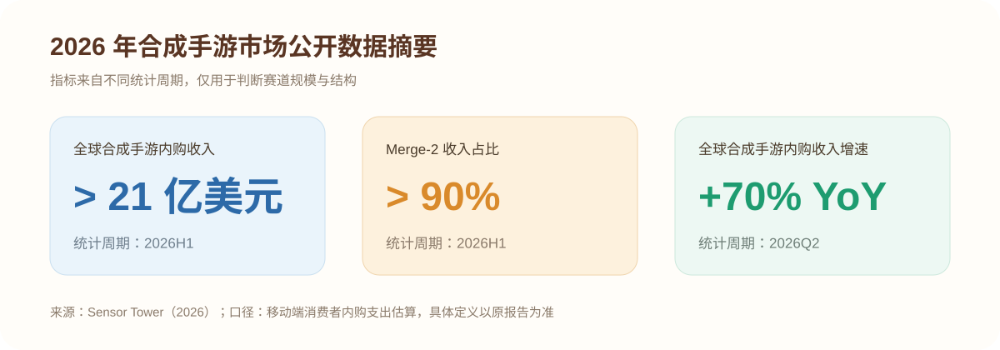
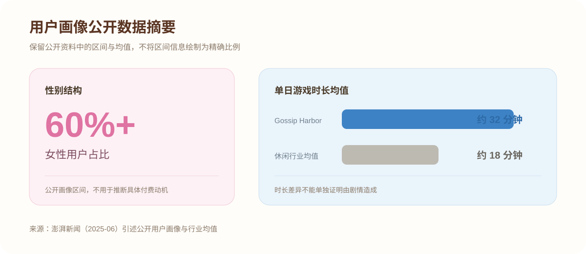
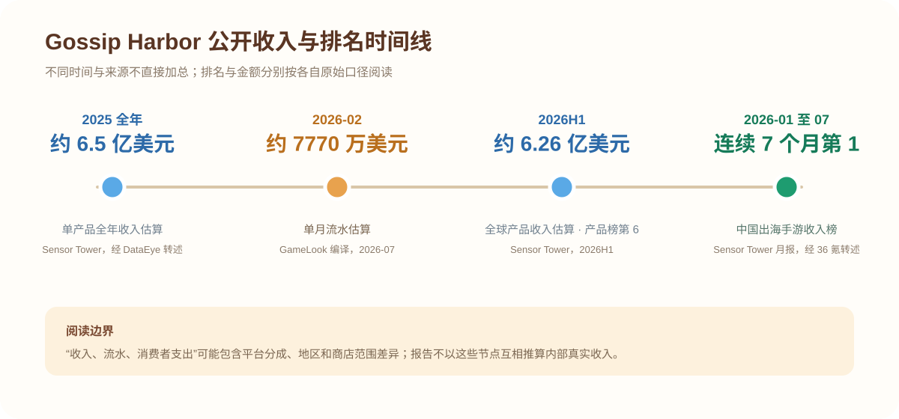
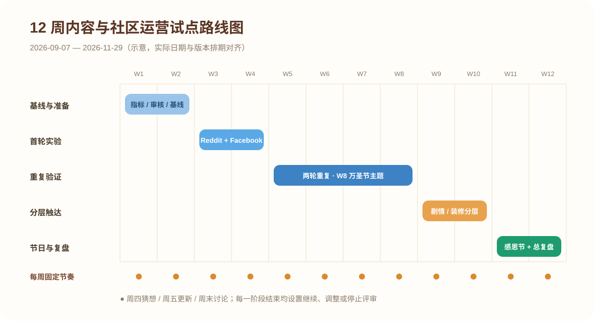

目录
报告速览（Executive Summary）
本报告回答一个问题：在不调整核心玩法的前提下，如何把《Gossip Harbor》的周更剧情转化为可持续的社区参与和版本回流。
基于公开数据、实机体验和 2026 年 7 月的社区样本，我形成了三个方向性判断：
- 产品已验证“合成 + 叙事”的商业潜力。公开榜单显示其处于出海收入头部；不同机构的收入估算口径不完全一致，因此本报告只用于判断趋势，不进行跨来源精确比较。
- 剧情可能是重要的回流与付费动机之一。公开画像显示女性用户占比超过 60%，单日游戏时长约 32 分钟；这一相关性不能单独证明因果，仍需用版本回流和章节漏斗验证。
- 社区中的剧情内容存在可测试的承接机会。2026 年 7 月近 30 天样本中，“The story”标签帖明显少于“Venting”标签帖。受样本量和标签习惯影响，这里将其定义为运营假设，而不是既定结论。
建议方案：围绕“周四猜想—周五更新—周末讨论”建立 12 周内容运营试点，以剧情更新后 24 小时回流率和有效讨论参与人数为核心指标；先建立基线，再通过对照组与分层触达判断是否扩大投入。
证据标签：【公开数据】指可追溯的第三方资料；【社区样本】指特定时间窗口内的社区观察；【实机体验】指作者个人游玩记录；【待验证假设】指需要内部 BI 或实验才能确认的判断。
一、产品与市场定位
1.1 一句话产品认知
《浪漫餐厅》海外定名 Gossip Harbor，是柠檬微趣研发的剧情驱动型 Merge-2（二合）休闲手游，2022 年 7 月上线海外。产品以都市情感与悬疑叙事提供长期目标，以合成和餐厅装修承接日常操作与成长反馈。开局剧情为女主凯莉（英文名 Quinn）离婚后带女儿经营餐厅并追查投毒事件（澎湃新闻，2025-06；女主名以游戏内中文译名为准）。
 图 1-1：产品 Google Play 海外商店页（App Store 商店页结构基本一致，此处以 Google Play 为代表）
图 1-1：产品 Google Play 海外商店页（App Store 商店页结构基本一致，此处以 Google Play 为代表）
1.2 赛道背景：Merge-2 保持增长
2026 年上半年，全球合成手游收入突破 21 亿美元，成为解谜品类中第二大收入子品类；其中二合（Merge-2）贡献了超 90% 的品类收入（Sensor Tower）。2026 年第二季度全球合成手游内购收入首次突破 10 亿美元、同比 +70%，成为推动全球解谜手游收入增长的重要引擎。

图 1-2：2026 年合成手游市场公开数据摘要。三项指标分别对应 2026H1、2026H1 和 2026Q2，不跨时间直接相加或比较（Sensor Tower，2026）。
格局上中国厂商已主导赛道：2025 年合成品类流水 Top 20 中 12 款来自中国厂商、9 款出海产品年流水过亿人民币；玩法格局上 Merge-2 上榜 12 款、首次超过 Merge-3（8 款）（白鲸出海/36 氪年度榜单，2026-02）。
头部集中度显著：柠檬微趣 2026 上半年收入约 10.6 亿美元、同比 +30%，在 Sensor Tower 全球发行商收入榜中位列第 7，并被该报告列为增速最快的发行商；旗下 Gossip Harbor 已连续 7 个月位列中国出海手游收入榜首，公开榜单可以支持其处于 Merge-2 头部位置。
1.3 市场定位与发行节奏
海外主市场：北美、欧洲，买量素材突出情感冲突和悬念。2025 年公开报道统计，柠檬微趣投放素材中有超过 1 万组涉及短剧元素；素材规模可以说明其工业化生产能力，但实际转化效果仍需 CTR、CVR、CPI 与回收数据验证（澎湃新闻，2025-06）。
发行成绩：《Gossip Harbor》自 2026 年 1 月起连续 7 个月位列中国出海手游收入榜首，并在相关 Sensor Tower 月报口径下位列全球解谜手游收入榜首；2026 年 2 月的公开单月流水估算高于《糖果传奇》。后者属于三消产品，只用于观察收入规模，不作为 Merge-2 直接竞品。
国内并行：国服版《浪漫餐厅》及微信小游戏端 2024 年上线，2025 年 3 月进入微信小游戏消耗增长榜第 10（DataEye）。国服做剧情尺度本地化裁剪，但出海仍是主战场，本报告以海外运营为主线。
1.4 竞争格局对比
| 产品 |
厂商 |
题材定位 |
最新公开表现 |
对运营方案的启示 |
| Gossip Harbor |
柠檬微趣 |
都市情感 + 悬疑剧情 |
连续 7 个月蝉联出海收入冠军；2025 全年收入约 6.5 亿美元（Sensor Tower） |
叙事驱动的品类标杆 |
| Merge Mansion |
Metacore |
庄园解谜剧情 |
头部爆款流水开始下滑（白鲸出海，2026-02） |
老牌产品叙事疲劳，后来者仍有窗口 |
| Travel Town |
Magmatic |
环球旅行经营 |
品类老牌头部，2025 全年约 2.1 亿美元，但已被后发的《Tasty Travels》反超（AppMagic） |
玩法先行，剧情偏弱 |
| Seaside Escape |
柠檬微趣 |
同厂剧情合成 |
全球合成手游收入榜前三，主攻日韩市场（2025 全年约 1.7 亿美元） |
同厂矩阵复制，验证方法论可复用 |
| Tasty Travels |
点点互动 |
环球美食旅行 |
2026 年 5 月海外收入突破 3900 万美元创新高，已反超《Travel Town》成第二大二合（点点数据） |
题材差异化 + 副玩法填空窗期 |
1.5 差异化优势与风险（市场战略视角）
产品的差异化主要来自三点：叙事承担长期目标，合成和装修承担日常反馈；短剧式素材能够持续提供获客题材；周更剧情和高频活动形成稳定的内容节奏。相应风险是内容长期更新可能出现套路化、买量素材边际效率下降，以及不同市场对剧情冲突和文化议题的接受度不同。
运营含义：运营侧应优先验证“剧情内容能否提升更新节点回流与社区参与”，再决定是否扩大内容和创作者投入；买量效率、剧情质量和用户留存仍需分别评估，不能由素材数量直接推导。
二、用户分析
2.1 核心用户画像（公开数据）
| 维度 |
数据 |
来源 |
| 性别 |
女性占比超过 60% |
澎湃新闻 2025-06 引述公开画像 |
| 年龄 |
平均约 32 岁，千禧一代为主 |
Sensor Tower 用户画像（澎湃新闻 2025-06 引述） |
| 地域 |
主要收入市场集中在北美与欧洲 |
公开榜单与媒体报道的方向性判断 |
| 单日时长 |
均值约 32 分钟 vs 休闲行业平均 18 分钟 |
澎湃新闻 2025-06 |
| 付费动机 |
无公开总体数据；剧情推进、体力和外观为待验证动机 |
【待验证假设】需内部付费路径与访谈验证 |
用户特征归纳：公开画像可以支持“成年女性用户占比较高、单日使用时长高于休闲品类均值”的判断；对剧情、装修和合成的偏好强弱，以及各自对付费的贡献，需要结合章节进度、活动参与和购买路径进一步验证。

图 2-1：女性用户占比与单日游戏时长公开数据摘要。60%+ 为区间信息，不绘制为精确比例（澎湃新闻 2025-06 引述公开画像）。
2.2 用户分层（运营视角推断）
说明：下面的分层基于公开画像、社区样本和实机体验，目的是把用户类型转化为可观察行为。各分层的真实规模、阈值和价值需要通过内部 BI 校准。
| 暂定分层 |
可观察行为 |
待验证假设 |
验证指标 |
| 剧情推进型 |
章节推进快、点击更新通知、购买体力或进度礼包 |
剧情更新对回流和付费影响更强 |
更新后 24h 回流、章节完成率、礼包转化 |
| 装修收集型 |
频繁更换装饰、参与收集活动、浏览外观礼包 |
限定外观和主题赛更能提升参与 |
活动参与率、装饰使用率、外观礼包转化 |
| 合成效率型 |
订单完成多、剧情点击少、资源广告观看频繁 |
竞速和资源活动更能提升活跃 |
订单数、活动完成率、广告观看与留存 |
| 新进流用户 |
来自短剧素材、首日进入但未完成关键章节 |
广告承诺与前 10 分钟体验衔接影响次留 |
教程完成率、首章完成率、D1 留存 |
2.3 用户痛点（个人游玩 + 社区评论提炼）
- 体力限制：高阶订单消耗较多体力，等待恢复会中断连续体验；
- 随机产出：部分订单依赖高阶或概率物品，容易形成进度停滞；
- 内容间隔：剧情更新后的非更新日缺少同等强度的叙事目标；
- 棋盘空间：高阶物品占用空间，后期整理和扩容压力上升。
【社区样本】r/GossipHarbor 约有 1.4 万成员；GummySearch 的 2026 年 7 月近 30 天快照中，Ice Cube、Energy、Event 是较常见的问题词。该样本只用于发现问题线索，不代表全体玩家。
2.4 海外社区生态实况
【社区样本】同一快照中，“Venting”标签记录 30 帖，“The story”标签记录 4 帖；官方 Facebook 则以找不同、拼图等轻互动内容为主（澎湃新闻 2025-06）。由于标签使用习惯、平台人群和样本窗口都会影响结果，本报告只提出一个待验证命题：官方是否可以通过固定剧情栏目，提高有效讨论并带动版本回流。
2.5 对出海运营的启示
- 按可观察行为分层触达，避免用单一活动覆盖所有用户；
- 将体力、随机产出和棋盘空间纳入每周舆情分类，并与进度停滞和流失数据交叉验证；
- 先在 Reddit 与 Facebook 进行小规模剧情栏目测试，再根据参与质量决定是否扩展至 Instagram、TikTok 或创作者合作；
- 让买量素材、首日剧情体验和社区内容使用同一主题，并通过渠道 cohort 检查承接效果。
待验证命题：固定剧情栏目能否提升有效讨论参与，并对剧情更新后 24 小时回流产生增量影响。第五章将围绕这一命题设计试点。
三、产品拆解
3.1 核心循环
消耗体力生成素材 → 两两合并合成高阶食材 → 完成顾客订单获取金币与线索 → 解锁餐厅装修、推进剧情 → 产生更高阶素材需求，循环往复。
三大模块并行：
- 合成玩法模块：将两个同级物品拖拽合并，操作规则直观；
- 餐厅装修模块：金币解锁家具、改造海边餐厅，支持自由更换布局；
- 叙事剧情模块：每周五更新章节，情感纠葛 + 悬疑双线推进。
 图 3-1：核心循环示意图
图 3-1：核心循环示意图
图 3-2：游戏内实机画面（作者 2026-07 实机体验记录）——左：订单与合成棋盘；中：餐厅装修选择；右：剧情对话。截图仅用于说明核心循环，不用于评价正式版本画面表现。
3.2 商业化体系
【实机体验】产品以低价资源包和活动付费为主要可见入口，降低首次购买门槛：
- 直接付费：体力礼包、格子扩容礼包、剧情加速包、限定外观装饰礼包，档位以 1.99 / 3.99 美元为主；
- 广告变现：看广告获取体力、道具、生成高级素材；
- 活动内购：限时竞赛、赛季活动中的通行证与活动专属装饰。
待验证假设：资源付费主要帮助用户缩短等待、推进剧情或获取限定外观；免费用户可能通过激励广告贡献收入。各动机的真实权重需要结合商品购买路径、广告观看与章节进度验证。
3.3 活动体系设计
多线并行活动填补版本空窗、维持活跃度：
| 活动类型 |
定位 |
公开案例 |
| 周度剧情更新 |
最核心长线内容，驱动核心用户回流 |
每周五定时更新 |
| 限时剧情活动 |
大版本情绪峰值 |
2025-05 "The Lost City of Heron Keys"；2025-06 "The Masked Tenor"（Sensor Tower 月报点名） |
| 限时竞速竞赛 |
玩家比拼收集分数，拿限定家具、道具 |
— |
| 赛季主题活动 |
集卡、掷骰子走格子，产出限定外观 |
— |
| 日常订单循环 |
基础循环，保证每日轻度玩家有事可做 |
— |
3.4 产品运营层面优势（基于游玩体验）
- 规则易理解：两个同级物品合并的核心操作直观，首轮体验可以快速建立反馈；
- 内容可传播：装修结果和角色关系适合被转化为视觉内容、投票与讨论话题；
- 运营节点充足：周更剧情、限时剧情、竞速、赛季和日常订单提供不同频率的触达机会；
- 低价商品入口明确：1.99 / 3.99 美元等可见档位降低首次付费门槛，但复购和价格敏感度仍需内部数据确认。
3.5 产品运营层面短板（基于游玩 + 社区观察）
- 高阶订单挫败：实机体验与社区样本都出现高阶物品、随机产出和进度停滞反馈；
- 体力中断体验：资源耗尽会切断连续操作，其对流失和付费的影响需要按进度 cohort 验证；
- 更新间隔缺少强目标：剧情更新后的参与变化尚无内部数据，建议先监控每日活跃和章节完成曲线；
- 棋盘空间压力：高阶物品占用空间增加，需观察整理行为、扩容购买和相关负面反馈。
协作原则：运营先用舆情分类、分层数据和低成本活动验证问题，再与产品、数值、投放和客服团队确定处理方式。福利补偿只能作为短期手段，不能替代对真实卡点的定位。
四、数据复盘（公开数据）
4.1 收入规模（按时间 / 主体 / 口径拆分）
说明：以下数据来自不同三方机构，统计口径（内购/流水、海外/全球、单产品/集团）存在差异，因此按"主体 × 时间 × 口径"分别列出，避免横向误读；精确数字以发行方内部 BI 与 Sensor Tower / AppMagic 单产品页为准。
| 时间 |
主体 |
数据 |
来源 / 口径 |
| 2026 年 1-7 月 |
Gossip Harbor 单产品 |
连续 7 个月位列中国出海手游收入榜首；在相关月报口径下位列全球解谜手游收入榜首 |
Sensor Tower 月报（36 氪 2026-08-17 转述） |
| 2025 全年 |
Gossip Harbor 单产品 |
全年收入约 6.5 亿美元（约 44 亿元 RMB） |
Sensor Tower（DataEye 2026-07 转述） |
| 2026-02 |
Gossip Harbor 单产品 |
单月流水约 7770 万美元，首次反超《糖果传奇》（约 7170 万美元） |
GameLook 2026-07 编译 |
| 2026 上半年 |
柠檬微趣集团 |
收入约 10.6 亿美元，同比 +30%，全球发行商第 7（增速第一） |
Sensor Tower（2026 上半年全球手游榜） |
| 2026 上半年 |
Gossip Harbor 单产品 |
全球产品收入约 6.26 亿美元（产品榜第 6） |
Sensor Tower（2026 上半年全球手游榜） |
| 2025 全年 |
Travel Town（竞品） |
约 2.1 亿美元，已被后发《Tasty Travels》反超 |
AppMagic（白鲸出海 2026-02） |
| 2025 全年 |
Seaside Escape（同厂） |
约 1.7 亿美元，全球合成手游收入前三 |
AppMagic（白鲸出海 2026-02） |
| 2026Q2 |
全球合成手游大盘 |
内购收入首次突破 10 亿美元，同比 +70% |
Sensor Tower（环球网 2026-08） |
比较结论：不同公开榜单均支持《Gossip Harbor》处于 Merge-2 收入头部，但榜单范围、时间和估算模型不同，不能据此精确计算与《Merge Mansion》《Travel Town》的收入差距；《糖果传奇》属于三消产品，仅用于观察收入量级。

图 4-1：Gossip Harbor 公开收入与排名时间线。不同节点的统计周期和指标口径不同，仅用于观察趋势，不作直接加总或横向比较。
4.2 用户行为假设与验证需求
- 公开数据：单日游戏时长均值约 32 分钟，高于报道引用的休闲行业平均 18 分钟；该数据说明参与深度较高，但不能单独归因于剧情（澎湃新闻，2025-06）。
- 假设 A：周更剧情带来更新节点回流。验证方式：比较更新前后 24 小时的合格用户回流，并与过去 4 个版本及未触达对照组比较。
- 假设 B：高阶物品、体力和棋盘空间导致进度停滞。验证方式：建立“停滞时长—次日/七日流失”曲线，并结合客服和社区关键词定位。
- 假设 C：短剧素材带来的新用户存在承接差异。验证方式：按素材主题建立渠道 cohort，比较教程完成、首章完成和 D1 留存。
4.3 商业化观察与验证需求
- 可观察事实：商品入口覆盖体力、空间、活动通行证和限定外观，并存在激励广告资源入口。
- 待验证动机：资源购买是否主要由剧情推进驱动，应通过“购买前后章节进度、商品类型、用户分层”交叉分析。
- 待验证价值：不同分层的 ARPU、广告 ARPDAU 和 LTV 均属于内部指标，公开资料不足以得出高低结论。
4.4 数据复盘小结
公开数据能够支持“产品处于赛道头部、叙事是重要差异化资产”的方向性判断，但无法直接证明剧情对留存、付费和 LTV 的因果贡献。因此，第五章不预设结论，而是用 12 周试点验证“剧情内容运营是否带来增量回流与有效讨论”。
数据边界：第三方数据只用于外部趋势判断；关键决策应以统一口径的内部 BI、社区舆情和对照实验共同支持。周报频率统一为每周一次。
五、12 周内容与社区运营试点
方案定位：站在游戏运营支持岗视角，以剧情内容和社区承接为主线，先验证增量效果，再决定是否扩展到创作者合作和更大规模的活动资源。
5.1 试点目标与完整链路
核心命题：固定的“周四猜想—周五更新—周末讨论”内容节奏，能否提升剧情更新后 24 小时回流率和有效讨论参与人数。
北极星指标：目标用户在剧情更新后 24 小时内的增量回流率；辅助指标：有效讨论参与人数、内容互动率、唯一礼包码兑换率和负面反馈率。
| 环节 |
运营动作 |
协作方 / 依赖 |
成功信号 |
| 买量 |
按剧情主题标记素材，并保持素材承诺与首日剧情一致 |
投放、素材、本地化 |
对应 cohort 的教程完成和 D1 留存改善 |
| 游戏内 |
向合格用户发送更新预告；预留未触达对照组 |
产品、数据、推送权限 |
触达组 24h 回流高于对照组 |
| 社区 |
发布猜想投票、更新讨论和复盘内容 |
社区、文案、内容审核 |
有效参与人数和评论深度提高 |
| 复盘 |
统一追踪链接、礼包码和版本 cohort，形成周报 |
数据、客服、投放 |
能够区分自然波动与运营增量 |
5.2 核心实验：剧情猜想话题
依据：2026 年 7 月社区样本显示剧情标签帖较少，因此先把“剧情内容承接不足”作为假设，用小规模实验验证，不直接扩展为长期栏目。
 图 5-1：典型情感诉求类素材（TikTok，2025-03）。平台页面展示值不等同于真实玩家规模，本报告只分析其“困境—悬念—行动”叙事结构。
图 5-1：典型情感诉求类素材（TikTok，2025-03）。平台页面展示值不等同于真实玩家规模，本报告只分析其“困境—悬念—行动”叙事结构。
连续 7 天实验流程
| 阶段 |
动作 |
追踪方式 |
负责人 / 依赖 |
| D-3 预热 |
Reddit 与 Facebook 发布无剧透三选一猜想；首轮不扩多平台 |
唯一追踪链接、有效投票人数 |
内容运营；需本地化与剧透审核 |
| D0 更新 |
剧情上线后发布讨论帖；向目标用户推送，保留随机对照组 |
触达 / 对照 cohort、24h 回流率 |
社区与数据；需推送和分组权限 |
| D1–D2 发酵 |
回复高质量讨论；向符合规则的参与者发放唯一礼包码 |
有效评论、兑换率、异常领取率 |
社区与客服；需奖励规则和反作弊 |
| D3 复盘 |
发布结果卡并完成单轮复盘，不提前承诺常态化 |
增量回流、有效参与、单位增量成本 |
运营、数据、投放共同评审 |
判断规则（示意，W1–W2 建立基线后校准）：若有效参与人数较过去 4 周同类帖中位数提升至少 20%，且目标 cohort 的 24h 回流率较对照组提升至少 3%，进入下一轮；若连续两轮未达到任一核心指标，或负面反馈 / 单位增量成本超出团队阈值，则调整主题、渠道或停止实验。
5.3 12 周推进路线
试点窗口：以下以 2026-09-07 至 2026-11-29 为示意周期，覆盖万圣节与感恩节；实际日期需与版本、素材、本地化和审核排期对齐。

图 5-2：12 周运营试点路线图。先建立基线，再逐步扩大样本；节日内容只有在基础实验有效后接入。
- W1–W2｜基线与准备：统一指标、建立舆情分类、完成剧透与本地化流程，记录自然回流和社区互动基线；
- W3–W4｜首轮实验：仅在 Reddit 与 Facebook 运行一轮剧情猜想，保留对照组；
- W5–W8｜重复验证：更换角色与题型重复两轮，并在万圣节节点测试主题内容；
- W9–W10｜分层触达：分别对剧情推进型和装修收集型用户测试不同内容；
- W11–W12｜感恩节与复盘：仅在前序指标达标时接入节日主题，最终输出继续、调整或停止建议。
5.4 分层触达 SOP
| 触发条件 |
内容与渠道 |
核心指标 |
验证方式 |
| 近 7 日完成剧情章节或点击更新通知 |
更新预告、剧情猜想；游戏内推送 + 社区 |
24h 回流、章节完成 |
随机保留未触达对照组 |
| 近 14 日多次更换装饰或参与收集活动 |
主题装修征集、布局灵感；Facebook / Instagram |
有效投稿、活动参与 |
与非主题内容的历史基线比较 |
| 订单完成高、剧情点击低、资源广告观看频繁 |
竞速提示和资源活动；游戏内 |
订单数、活动完成、广告 ARPDAU |
按进度和活跃度匹配 cohort |
| 来自剧情素材且未完成首章 |
素材同主题首日引导；与投放和产品联动 |
教程完成、首章完成、D1 |
按素材主题比较渠道 cohort |
5.5 舆情与数据看板（周报框架）
- 舆情模块：按体力、随机产出、剧情、活动、技术问题分类；同时记录数量、互动量、情绪和代表性原文，避免只看关键词次数。
- 行为模块：按版本、渠道和用户分层查看 24h 回流、章节完成、活动参与、礼包兑换与 D1 / D7。
- 结论模块：每周只输出“继续 / 调整 / 停止”三类建议，并写明证据、负责人和下周验证动作。
5.6 风险预案
- 剧透与内容安全：所有预告使用已批准素材，设置剧透等级；涉及性别、宗教、身份等议题时完成本地化与内容审核。
- 奖励滥用：唯一礼包码设置领取条件、有效期和异常兑换监控，客服保留申诉路径。
- 归因偏差：节日、版本质量和投放变化都可能影响回流；通过对照组、历史基线和素材 cohort 降低误判。
- 资源不足：若本地化、审核或数据权限未就绪，则缩小渠道与样本，不以不完整数据扩大投入。
5.7 我会盯的核心指标（监控框架）
以下阈值用于展示判断方法，正式目标应在 W1–W2 完成基线后，由运营、数据和业务负责人共同确认。
| 指标 |
定义 |
比较方式 |
决策规则（示意） |
| 更新后 24h 回流率 |
合格用户中，更新后 24h 内再次登录的比例 |
触达组 vs 随机对照组；同时参考过去 4 版本中位数 |
相对对照提升 ≥3% 才进入下一轮 |
| 有效讨论参与人数 |
完成投票或发表非重复有效评论的独立用户数 |
过去 4 周同类内容中位数 |
提升 ≥20%，且垃圾 / 重复内容不明显上升 |
| 礼包码兑换率 |
成功兑换人数 / 合格获奖人数 |
不同平台、不同奖励档位 |
异常领取上升则暂停发放并排查规则 |
| 负面反馈率 |
与剧透、奖励公平或内容不适相关的负面反馈 / 有效互动 |
过去 4 周基线与各市场差异 |
超过团队阈值即暂停对应素材或市场投放 |
| 单位增量回流成本 |
内容、奖励与人力成本 / 相对对照组新增回流人数 |
团队现有召回或再营销成本 |
连续两轮高于替代方案则停止或降级 |
六、总结：方法论提炼
《Gossip Harbor》用叙事提供长期目标，用合成与装修承接日常操作，并通过稳定更新形成持续触达机会。对运营岗位而言，关键不是重复说明“剧情重要”，而是证明具体内容动作能否带来增量结果。
本报告最终形成三条工作原则：
- 公开数据用于发现方向，内部 BI 与实验用于确认因果；
- 社区观察先转化为可测试假设，再决定是否投入长期资源；
- 运营动作必须同时写清目标用户、执行依赖、核心指标和停止条件。
岗位匹配：这套方案覆盖内容排期、社区执行、本地化与审核协作、活动配置、客服反馈、数据复盘和跨团队推进，能够对应游戏运营支持岗位的日常工作链路。
附：入职后 30 天计划（示意）
入职首月的目标不是直接扩大活动，而是完成基线、流程和首轮小规模验证。
| 阶段 |
交付物 |
完成标准 |
| 第 1 周 |
指标字典与数据权限清单 |
统一 24h 回流、章节完成、活动参与和渠道 cohort 口径 |
| 第 2 周 |
社区基线周报与内容审核流程 |
完成 Reddit / Facebook 分类样本，并确认本地化、剧透和奖励审批人 |
| 第 3 周 |
首轮剧情猜想实验 |
完成追踪、对照分组、内容发布、奖励发放和异常监控 |
| 第 4 周 |
实验复盘与下一阶段建议 |
基于指标给出继续、调整或停止结论，并明确下一轮负责人和排期 |